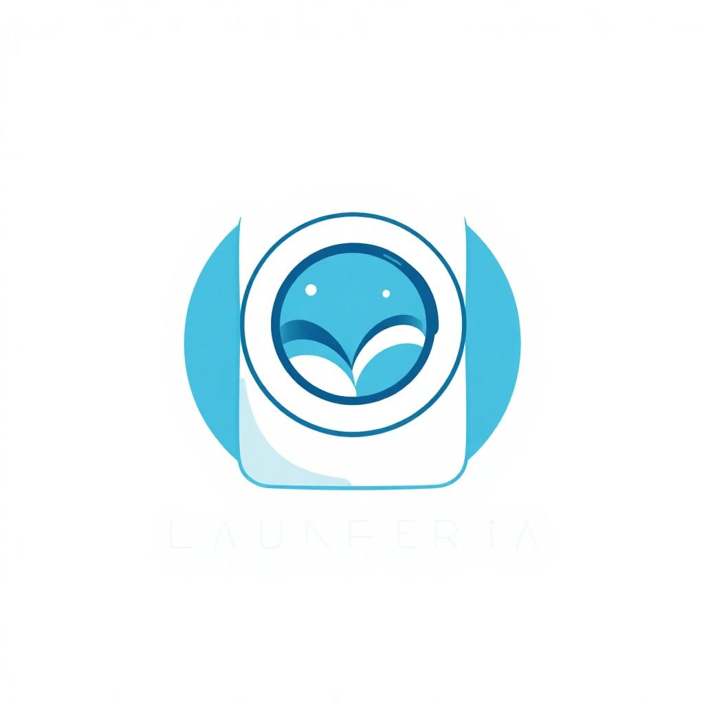

Juan Sebastián
Rondón Garcés
Desarrollo software funcional, desde aplicaciones de escritorio hasta sistemas backend. Me interesa construir herramientas que resuelvan problemas reales.
Aplicación de escritorio para Windows que registra en segundo plano el tiempo de uso de cada programa durante la semana. Cada lunes genera y envía automáticamente un reporte en PDF al correo del usuario con las aplicaciones más utilizadas.
Sistema de gestión para el alquiler de lavadoras. Proyecto académico que abarca frontend en React, backend en Node.js y base de datos MySQL. Pendiente de mejoras y refinamiento.

Página personal desarrollada como sitio estático alojado en GitHub Pages. Diseño propio con HTML, CSS y JavaScript.